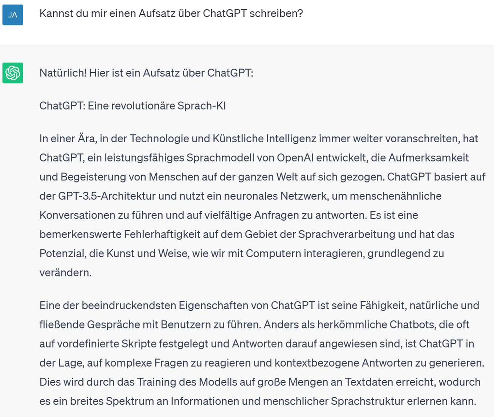
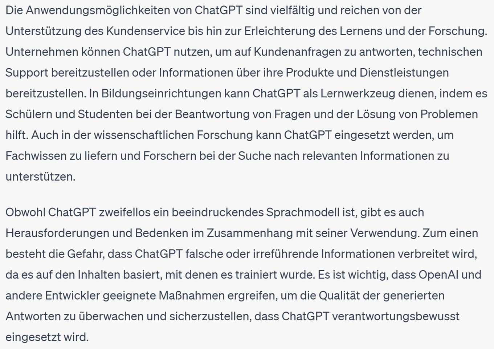

Wie funktioniert ChatGPT? ChatGPT ist eine Form von KI, eine Software, welche mit riesigen Datenmengen gefüttert wurde. Hier mit allmöglichem Texten welche im Internett zu finden sind. So hat die Software gelernt wie Sprache funktioniert, auf welche Frage welche Antwort folgt und kann fast schon sprechen wie ein Mensch. Aber ChatGPT weiss nicht, was es genau sagt. Es hat gelernt, wie die Antwort auf eine bestimmte Frage lautet. Es spricht also wie ein Papagei, welcher nur die Antwort nachplappert.
Was sind die Grenzen von ChatGPT und worauf sollte man bei der Verwendung achten?
ChatGPT weiss also nicht, was es genau auf eine Frage antwortet. Deshalb weiss die Software auch nicht, wenn sie eine falsche Antwort gab. Da aber die Sätze so gut formuliert sind, hinterfragt man die Antwort viel zu wenig. Lässt man ChatGPT einen Aufsatz zu einem bestimmten Thema schreiben, muss man darauf achten, ob der Inhalt auch wirklich stimmt. Der Aufsatz ist auch sehr kurz geschrieben und man merkt der Sprache an, dass sie von einer künstlichen Intelligenz geschrieben wurde. Die Sätze sind ähnlich geschrieben, alle mehr oder weniger gleich lang und langweilig. ................Abstand?............................Hier ein Ausschnitt eines Beispiels von ChatGPT, als ich ihn fragten er einen Aufsatz über ChatGPT zu schreiben kann.

...........Abstand?..............Weiter in seinem generierten Aufsatz, zählt er Beispiele auf, in welchen Bereichen man die Software benutzen kann und sie hilfreich ist. Doch dann gibt er seinen eigenen «Probleme» preis. In diesem Abschnitt wurde mir bewusst, dass ChatGPT keine Ahnung hat, was er uns Antwortet. ...............Abstand?............
